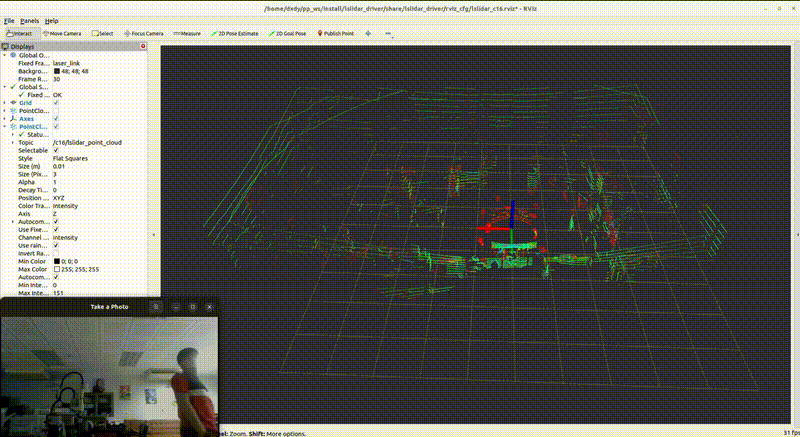
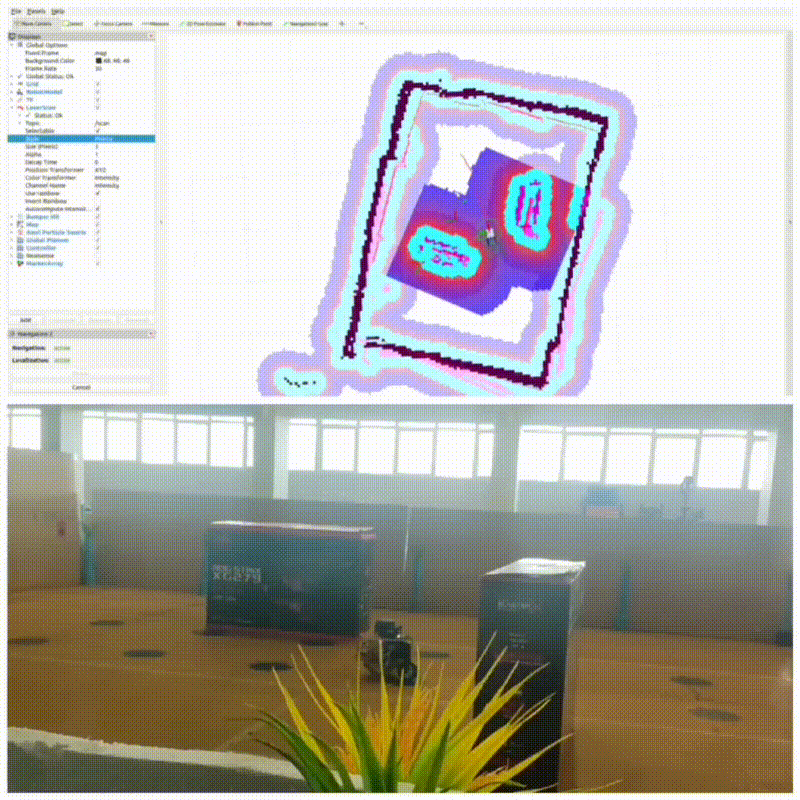

ETL Project Coordinator
Emerging Technology Lab (ETL), Faculty of Digital Technologies, American University of Phnom Penh (AUPP). I coordinate lab activities and support projects across AI, robotics and cybersecurity.
I work across ROS2, AI and deep learning, SLAM, LiDAR navigation, Gazebo, SolidWorks and industrial automation, with research experience in Japan and engineering training in France.
A short overview of my current work, technical direction and collaboration interests.
Emerging Technology Lab (ETL), Faculty of Digital Technologies, American University of Phnom Penh (AUPP). I coordinate lab activities and support projects across AI, robotics and cybersecurity.
Improving practical robotics workflows around ROS, Docker, simulation environments and easier development setups for students and project teams.
Interested in applied robotics, AI/IoT, 3D perception, autonomous systems, emerging technology education and research-oriented engineering projects.
A focused selection of work that reflects my interests in 3D perception, autonomous robotics and applied intelligent systems.

Master’s research on PointPillars-based human detection and tracking with sparse 16-channel LiDAR for indoor environments, including data processing and optimized inference workflows.

Engineer’s degree thesis using ROS2 on a differential-drive robot, with LiDAR integration, mapping, visualization and autonomous navigation workflows.
A full-stack AI product identification system integrating Gemini API, Flask, web data extraction and PostgreSQL-backed data management.
Kasetsart University project-laboratory internship focused on Automated Guided Vehicles (AGVs), with hands-on work in ROS2, SLAM, navigation, Gazebo simulation, and 2D/3D LiDAR integration.
Future releases can be added here without redesigning the site. Add a new project card, repository link, demo GIF/video thumbnail and a short status such as In Development, Research or Released.
Peer-reviewed work from my master’s research in real-time 3D perception with low-resolution LiDAR.
Rady Ly, Chowarit Mitsantisuk, Pished Bunnun, Atsushi Takahashi
Coordinate Emerging Technology Lab activities and support AI, robotics and cybersecurity initiatives.
Tested smart vehicle systems, investigated software issues and verified electrical and hardware-software integration for motorcycle platforms.
Developed 3D LiDAR data-processing pipelines, KITTI-format transformations and human-detection workflows using RANSAC, DBSCAN and PointPillars-oriented research tooling, including NVIDIA TAO Toolkit for model training and deployment workflows.
Worked on AGV simulation, ROS2 navigation and 2D/3D LiDAR integration for obstacle avoidance and dynamic mapping.
Supported the design of an automatic stacker machine using SolidWorks and assisted with engineering quality-control activities.
Master’s research focused on real-time 3D human detection and tracking using low-resolution 16-channel LiDAR.
Research-oriented exchange program focused on 3D LiDAR perception and PointPillars model optimization.
Automation, industrial robotics, motion planning, machine learning, innovation project work and PLC programming.
International engineering program with a thesis on real-time navigation and SLAM visualization using ROS2 on a differential-drive robot.